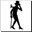

Syberia| Tiempo de juego | 22s |
| Última actividad | 11/11/2025 10:25:45 |
| Añadido | 23/9/2025 5:48:34 |
| Modificado | 10/12/2025 13:53:06 |
| Estado de finalización | Jugado |
| Librería | Playnite |
| Fuente | |
| Plataforma | PC (Windows) |
| Fecha de lanzamiento | 9/8/2002 |
| Puntuación de la Comunidad | 81 |
| Puntuación de la Crítica | 77 |
| Puntuación de usuario | |
| Género | Adventure Point-and-click Puzzle |
| Desarrollador | Microïds Canada |
| Editor | The Adventure Company |
| Característica | Single Player |
| Enlaces | Steam GOG 🌟Remaster |
| Tag | |
Hay aventuras que son pura adrenalina, y hay otras que son un viaje para el alma. "Syberia" es de las segundas. Es una aventura gráfica "point-and-click" de la vieja escuela, una historia melancólica y hermosa que te transporta a un mundo mágico y olvidado que se está desvaneciendo.
Acá sos Kate Walker, una abogada yanqui que viaja a un pueblo perdido en los Alpes franceses para cerrar la compra de una vieja fábrica de juguetes autómatas. Pero lo que empieza como un simple viaje de negocios se convierte en una odisea personal cuando descubre que tiene que encontrar a un heredero desaparecido, un genio inventor que se fue al este de Europa en busca de los últimos mamuts.
El mundo del juego es la verdadera estrella, una creación del legendario artista de cómics belga Benoît Sokal. Cada escenario es un cuadro pre-renderizado con un nivel de detalle y una dirección de arte que te dejan sin aliento. Es un mundo steampunk de ensueño, lleno de trenes a cuerda, pájaros mecánicos y una belleza triste y oxidada.
La jugabilidad es pura exploración y puzzles. Tenés que hablar con los personajes, prestar atención a los detalles del entorno y descifrar los ingeniosos mecanismos de los increíbles autómatas creados por la familia Voralberg. No es un juego que te apure; te pide que te tomes tu tiempo y te sumerjas en su atmósfera única.
"Syberia" es una obra de arte interactiva. Es un cuento sobre el paso del tiempo, la persecución de los sueños y el choque entre la magia y la modernidad. Su ritmo pausado y su belleza inolvidable lo convierten en una experiencia única y emotiva, una de las grandes joyas de la era dorada de las aventuras gráficas.